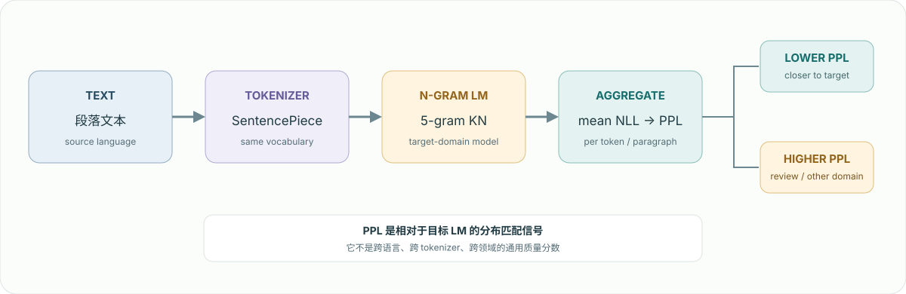

MODULE 10 / LLM DATA ENGINEERING
困惑度质量过滤
用语言模型估计文本与目标语域的分布距离：理解 N-gram、Kneser–Ney 平滑、Perplexity 与跨领域偏差。
如果一段网页文本语法通顺、没有重复，却可能是关键词堆砌或低价值内容，能否用语言模型判断它“像不像”高质量语料？困惑度可以提供一个分布相似度信号，但它不是通用质量分数。
从条件概率到平均惊讶度
自回归语言模型把一段 token 序列分解为一连串条件概率。对 token 序列 \(w_1,\ldots,w_T\)，联合概率可写成：
平均负对数似然（cross-entropy）衡量模型对真实 token 的平均“惊讶程度”。使用自然对数时，困惑度是它的指数：
如果使用 log base 10，则 \(PPL=10^{-\frac{1}{T}\sum_t \log_{10}P(w_t|w_{<t})}\)。困惑度可以理解为模型每一步面对的“等效平均候选数”：越低，说明该模型越容易预测这段文本。但“容易预测”只相对于特定模型、tokenizer、语言和目标分布而言。
N-gram LM：有限上下文与平滑
N-gram 语言模型用前面最多 \(n-1\) 个 token 估计下一个 token 的概率。最简单的最大似然估计会遇到稀疏问题：训练语料里没出现过的 n-gram 会得到零概率，整段文本的 PPL 就可能变成无穷大。Kneser–Ney 平滑通过折扣高频计数，并把折扣质量分配给低阶分布；其 continuation probability 让“在多少种不同上下文中出现过”也影响词的概率，而不只看总频次。
CCNet 使用每种语言自己的 SentencePiece tokenizer，以及在目标高质量语料（论文示例为 Wikipedia）上训练的 5-gram Kneser–Ney 模型，并通过 KenLM 高效计算段落困惑度。这一设计回答的是“文本与目标语域有多接近”，而不是“文本本身有没有价值”。

CCNet：把 PPL 用作相对分层，而非一刀切
CCNet 的目标是构建多语言 Common Crawl 语料。它对每种语言训练目标域语言模型，计算每个段落的 perplexity，然后按每种语言各自的分布切成等量的 head、middle、tail 三部分。head 更接近目标域分布，tail 更远。
一个非常重要的决定是：CCNet 没有直接删除 tail。作者指出，tail 中既有关键词列表等低质量文本，也可能包含口语化评论、专业论坛和与 Wikipedia 词汇分布差异较大的有效内容。论文认为困惑度是“相对不错”的质量代理，但不同语言的 PPL 分布会受到 Wikipedia 训练数据规模差异影响，因此按语言分别设定分位点。
| 分层 | 解释 | 可能包含 | 推荐用法 |
|---|---|---|---|
| Head | 低 PPL，接近目标语域 | 新闻、百科风格、书面说明 | 作为目标域相似度高的候选集 |
| Middle | 中等 PPL | 一般网页、博客、混合风格 | 结合其他质量信号采样 |
| Tail | 高 PPL，偏离目标语域 | 噪声、口语、专业术语、低资源内容 | 抽样审计，不要直接等同垃圾 |
为什么低 PPL 不等于高质量
- 目标域偏差：用 Wikipedia 训练的 LM 会偏好百科式表达；代码、论坛、数学推导、方言和新术语可能得到高 PPL。
- 语言与 tokenizer：不同 tokenizer 的 token 数和概率空间不同，PPL 不能不加说明地跨 tokenizer 比较。
- 长度与切分：短段落的估计方差更大；段落边界、BOS/EOS 处理会改变结果。
- 数据泄漏：若评估 LM 的训练语料包含待评分文本，PPL 会过于乐观。
- 重复和模板：高重复文本可能非常容易预测，因此 PPL 低，但并不意味着它有训练价值。
实践中应把 PPL 与语言识别、重复率、长度、来源、人工抽检和下游训练消融结合。最好保存原始 PPL、语言内分位数、LM 版本、tokenizer 版本与段落长度，而不是只保留一个布尔值。
KenLM：计算段落困惑度的最小示例
KenLM 的 Python API 中，Model.score 返回 log10 概率，Model.perplexity 会按空格分隔的 token 数（加上结束符）计算 PPL。如果模型使用 SentencePiece 子词训练，输入前必须用同一 tokenizer 编码，并将 piece 以空格连接后传给 KenLM。
import kenlm
import sentencepiece as spm
sp = spm.SentencePieceProcessor(model_file="target-domain.model")
lm = kenlm.Model("target-domain.5gram.binary")
text = "A document to score with the same target-domain tokenizer."
pieces = sp.encode(text, out_type=str)
lm_input = " ".join(pieces)
ppl = lm.perplexity(lm_input)
print(f"target-domain perplexity: {ppl:.3f}")交互练习：同一个阈值如何改变保留集？
下面三个样本和分数都是合成教学数据，不代表 CCNet 实测。滑动阈值，观察“低于阈值进入候选”的变化；生产中还应按语言内分位数分层。
本章参考资料
- Wenzek et al. (2020), CCNet: Extracting High Quality Monolingual Datasets from Web Crawl Data，§3.4、§5.2。
- KenLM source，Python API：score / perplexity implementation。
- Hugging Face · Perplexity of fixed-length models：PPL 定义与 tokenization 依赖。
- Penedo et al. (2024), FineWeb，§4 与 Appendix F：跨领域 PPL 反映数据分布覆盖，而非单一质量标尺。